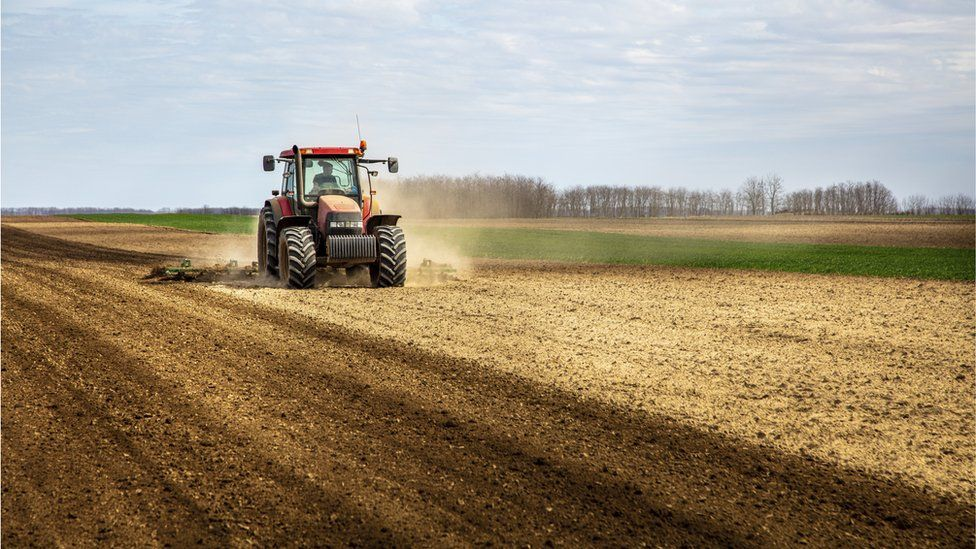
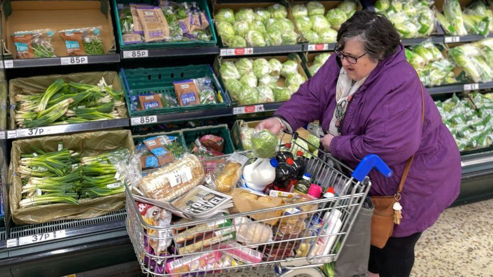

The prospect of an oil embargo on Russia, at least for its US and European customers, has sent the price soaring once more.
Four months ago, the price of Brent crude was below $70 per barrel. Last week, it rose 21%. As the new week's trading began in Australia, the price of benchmark Brent crude surged 10%, hitting $130 per barrel. Traders are reported saying it could surge through the $147.50 record price set in the turmoil of 2008.
A lot of that can be explained by comments on Sunday made by Antony Blinken, the US Secretary of State, saying in an NBC interview: "We are now in very active discussions with our European partners about banning the import of Russian oil to our countries, while of course, at the same time, maintaining a steady global supply of oil".
The discomfort of imposing sanctions while continuing to send $1bn per day to Russia to pay for its oil and gas (Russia supplies 8% of US oil demand) is turning the tide towards sanctions that could bite very hard in fuel prices for Europe, the US and beyond.
The concern in Europe is about losing the supply of Russia's natural gas. Its price ended last week on a spectacular surge, beating the record set in December, and getting very close to £5 per therm. Its trend level before it began to rise in the middle of last year was around 40p.
Wheat surges
But it's not just energy. Where raw materials are treated and traded as global commodities, war in Ukraine has sent other prices sharply up, and stock markets down. Reuters reports that last week saw nickel rise 19%, aluminium by 15%, zinc was up 12%, and copper increased 8%.
In precious metals too, gold is up, partly because investors see it as a safe haven. And palladium is one to watch. Russia has 40% of global production. The rare metal, at more than $3,000 per ounce, has catalytic uses in car engines and industry. Prices last week were up 25%.
The one to watch for all of us, even in the world's poorer households where they have little concern about the price of gas for heating or oil for cars, is food.
Securing a futures contract to supply wheat saw a 60% surge last week, and corn was up 15%.
Russia and Ukraine together account for around 30% of internationally traded wheat. Not much comes to Europe, instead going from Black Sea ports to the Middle East and Africa.
However, several ports are shut due to the war, and Ukraine's land infrastructure is being pounded by Russian shells. As a globally traded commodity, that supply disruption means the price goes up for everyone.
Malnutrition
Conflict in Ukraine is far from being the only pressure on food prices. They were rising anyway.
Extreme weather has disrupted crop growth with torrential rain in Germany, excessive heat in Canada and drought in parts of South America. Climate modellers are telling us to get used to that, and to plan agriculture to meet the growing challenge.
It is pointed out that lower harvests hit prices, and therefore affect poorest households first. Those modellers forecast a reversal in the falling number of people, over recent decades, who are unable to afford sufficient food energy to avoid malnutrition, affecting as many as 80 million people.
Food prices have been affected by Covid. Some produce has lacked the migrant farm labour to harvest it, from Malaysian palm oil to Scottish berries. Easing of infection restrictions has seen demand come back, and that pushes up prices.
Supply chains have been disrupted, linked to much higher costs of sea-going freight.
Machinery costs have been rising steeply, where the chip shortage affecting car production has also extended to increasingly sophisticated tractors.
Rising energy prices have fed through to higher transport costs of reaching market, and much higher fertilizer prices. Natural gas is a necessary input for ammonia and nitrates.
These are not costs that farmers can easily pass on to customers. The market sets the price. But if fertilizer becomes more expensive, less is used, yields fall, so that total supply falls too, and after some time, prices go up.
Cooking oil
Global food prices are tracked by the United Nations' farming division, the Food and Agriculture Organisation. The monthly figures just published show sugar was the only major farm produce to see a fall in price between January and February, though it is up 10% on February 2021.
The inflation of other prices was picking up pace, and most of the data was collected before Russian tanks rolled into Ukraine.
The FAO food price index was up 20.7% on February last year, and nearly 4% in one month.
Meat was up 15% in the year, driven by increased demand for beef and pork. Dairy rose by 25%, aided by lower than expected milk supply in Western Europe and Oceania. Neither is thought to reflect disruption by Russia's invasion of Ukraine.
But while tensions built on the border, cereal prices were rising by 3% between January and February, and by 15% over the preceding year.
And as Russia produces around 80% of the world's vegetable oils, that helps explain an 8.5% rise in one month, according to the FAO, and 37% over the year.
Next months' figures will include the impact on prices from a hot war starting, and traders adjusting to the disruption of supply of Ukrainian and Russian farm produce, as well as shipping.
Household bills
But consumers don't need to wait. They can already see prices rising. Britain's consumer price inflation rate has already hit 5.5%.
War has uprated economists' predictions of where it will peak, to forecasts north of 8% and even as high as 10%.
The US is already well ahead, with inflation in the year to January at 7.5%, the highest for 40 years. The February figure is issued on Thursday, and the US Fed, America's central bank, is expected to raise interest rates a week later.
Inflation has become a highly salient political issue for President Joe Biden in his mid-term election year, not least for the cost of filling a car with gasoline. The price of a gallon is up, on average, 45% since last year, according to the American Automobile Association, and 11% in the past week to $4 (£3.03).
In the UK, transport fuel costs were already higher, due to tax. And due to tax, they don't increase at the same pace as the crude oil price. However, the cost of a litre of unleaded it's hitting record prices every day, and the shock to the system of the Ukraine invasion won't be felt for some weeks. More politically salient, at least for now, is the rising cost of household energy, up 54% in April and by another whopping increase in October, when the price cap is adjusted. Perhaps if it went up incrementally, it would be less noticeable and less awkward for the government.
The rising cost of food will also bring the Ukraine war into every household budget, and put pressure on governments to respond.